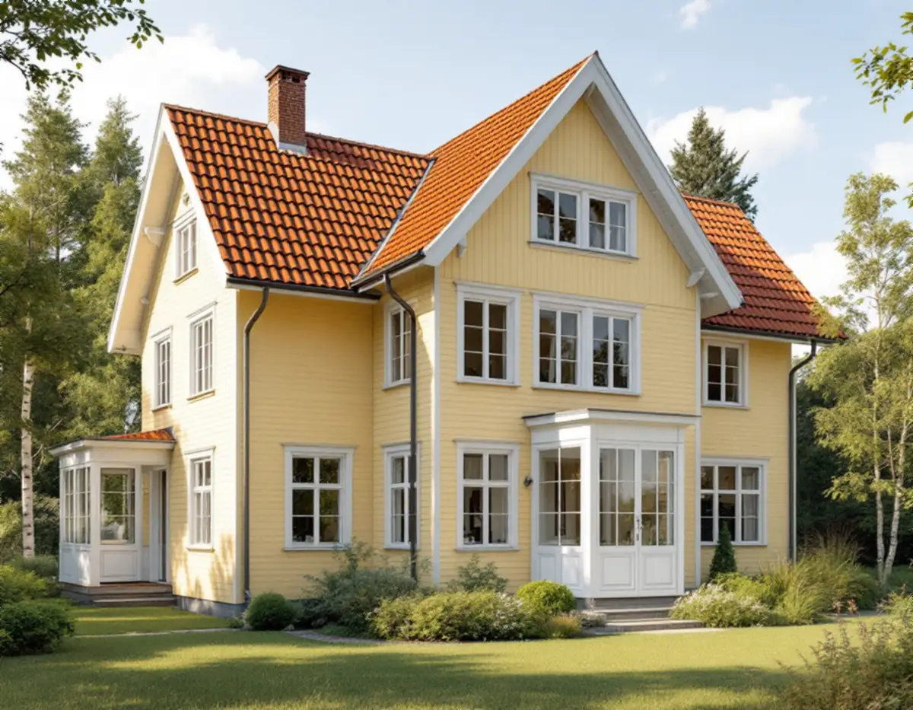
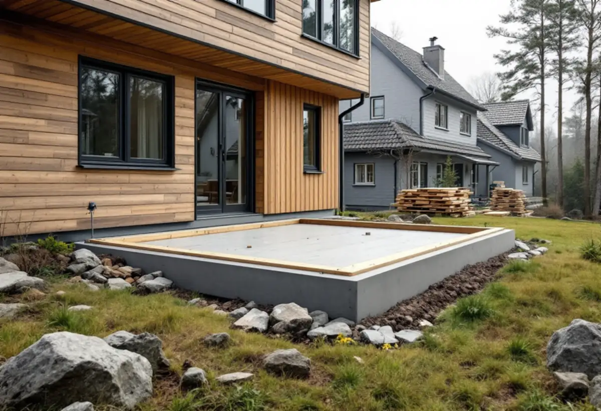

Detaljplan och byggrätt
Vi läser planen och tar reda på om den har utökad lovplikt och hur stor byggrätten är.
En tillbyggnad på upp till 30 kvadratmeter kan i dag göras utan bygglov, men i Täby är det värt att läsa detaljplanen först. Kommunen påpekar att vissa planer kräver lov även för det som annars är lovfritt, och i de äldre villastäderna finns råd om hur huset bör byggas till. Geal Entreprenad AB bygger till villor och radhus i Täby som total entreprenad och lämnar ett skriftligt kostnadsförslag efter ett gratis platsbesök.

Täby kommun beskriver tre lägen då en tillbyggnad på ett en- eller tvåbostadshus behöver bygglov: när den inte ryms i den lovfria potten, när byggnaden är särskilt värdefull och när detaljplanen har utökad lovplikt. Kommunen skriver att det i vissa fall står i gällande detaljplan att en annars lovfri tillbyggnad kräver bygglov.
Potten är högst 30,0 kvadratmeter bruttoarea eller öppenarea, sammanlagt för alla tillbyggnader som inte krävt lov, och tillbyggnaden får inte gå över taknocken (PBL 9 kap. 10 §). Boverket räknar upp vad som redan kan ha tagit av den: attefallstillbyggnad, attefallstakkupa, skärmtak, altan, balkong och burspråk.
Vill du veta hur stor byggrätten är kan du enligt kommunen läsa detaljplanen för fastigheten. Är du osäker på kulturvärdena kan du boka ett rådgivningsmöte med en handläggare. Vi tar gärna med oss frågorna dit.

Enligt Kulturmiljöer i Täby växte en villastad upp runt Täby kyrka med start vid järnvägsstationen, efter en avstyckningsplan från 1907. Byle byggdes enligt en stadsplan från samma år och planerades efter trädgårdsstadens ideal med stora tomter.
Typiskt för villorna från det tidiga 1900-talet är branta, ofta brutna tak med tegel eller målad plåt, takkupor, förstukvistar, burspråk och glasverandor och fönster som ofta är spröjsade. Kommunens råd för området är att fasadmaterial och färg vid om- och tillbyggnader bör anpassas till det befintliga huset om det har kvar sin ursprungliga färgsättning, och att fönster bör utformas i trä som originalen.
I underlaget visas en villa i Byle från 1909 där tillbyggnaden har fått samma färg, fasadmaterial och typ av fönster som det äldre huset och är underordnad huvudbyggnaden. Det är ett bra mått på vad som brukar fungera.
Villorna på båda sidor om Roslagsbanan i Norra Viggbyholm har vuxit fram sedan början av 1900-talet. Kommunen beskriver att det först främst byggdes sommarstugor och att villabyggandet tog fart med byggnadsplanen på 1930-talet. I dag finns allt från jugend och 1920-talsklassicism till 1960-talets mörka tegel och kataloghus från senare årtionden.
Här gäller samma råd: särskild vikt vid att anpassa tillbyggnader till platsens kulturvärden och att den ursprungliga färgsättningen får vara vägledande. På ett hus som började som sommarstuga är det ofta stommen och grunden som avgör hur tillbyggnaden kan göras, och det undersöker vi vid platsbesöket.
Kommunens generella riktlinjer för småhusområden säger att markarbeten som sprängning, fyllning och schaktning bör hållas nere, att tomterna bör präglas av den naturliga topografin och att omfattande terrasseringar ska undvikas. Inom kulturhistoriskt värdefulla områden bör tillbyggnader placeras mot trädgårdssidan och vara underordnade huvudbyggnaden.
För tillbyggnaden innebär det att grunden ofta får anpassas till marken i stället för tvärtom, till exempel med en sockel som tar upp lutningen, som på en villa i Viggbyholm från 1931 som underlaget visar. Taket bör enligt riktlinjerna ha samma form, material och takfot som huset. Hur den nya takdelen läggs beskriver vi under takbyte i Täby, och vill du ha hela projektet samlat, se byggföretag i Täby.
Vi läser planen och tar reda på om den har utökad lovplikt och hur stor byggrätten är.
Vi räknar ihop vad som redan byggts lovfritt på huset, som skärmtak och altan.
Huset, tomtens lutning, avstånd till gräns och anslutningen mot taket gås igenom.
En skiss i samma uttryck som huset och ett skriftligt kostnadsförslag.
Vid behov tas underlag till bygglov eller anmälan fram innan bygget börjar.
Grund, stomme, tak och fasad, och en genomgång när allt är klart.
En tillbyggnad på en villa eller ett radhus kan ge rotavdrag. Skatteverkets villkor är att en av tillbyggnadens sidor sitter ihop med husets yttervägg till minst 75 procent eller att det finns en dörr mellan delarna, att större delen av den gamla stommen behålls och att huset är äldre än fem år.
Du får 30 procent av arbetskostnaden i avdrag, högst 50 000 kr per person och år och högst 75 000 kr tillsammans med rutavdrag. Geal gör avdraget direkt på fakturan.
Tomtens lutning och grundläggning, hur mycket mark som behöver förberedas, om tillbyggnaden ska ha samma takmaterial och fönstertyp som ett äldre hus, om bygglov eller anmälan krävs och vilka installationer som ska in. Efter ett gratis platsbesök får du ett skriftligt kostnadsförslag.
Mer boyta i samma hus.
Tillbyggnad →Takbyte, takbesiktning och plåtarbeten.
Takläggare i Täby →Näsbypark, Viggbyholm och Gribbylund.
Takrenovering i Täby →Detaljplan, Q-märkning och VA-inkoppling.
Attefallshus i Täby →Kulör per kvarter och provytor.
Fasadmålning i Täby →Villastäder och grupphus i Täby.
Fönsterbyte i Täby →Stationsvillor, funkis och grupphus i Täby.
Plåtslagare i Täby →Betongpannor, kedjehus och tegelvillor.
Takbyte i Täby →Radhuslängor, villor och nya gästhus.
Badrumsrenovering i Täby →Tillbyggnad, gästhus och renovering.
Byggföretag i Täby →Tegelvillor, kedjehus och grupphus i Täby.
Fasadrenovering i Täby →Villor, radhus och kedjehus från 1970- och 80-talen.
Golvläggare i Täby →Grupphus, radhus och villor vid banan.
Köksrenovering i Täby →Trävillor, puts och kedjehus i Täby.
Målare i Täby →Verandor, fönster och carport.
Snickare i Täby →